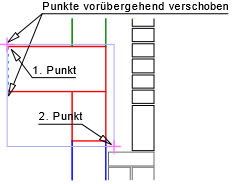
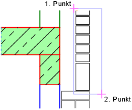
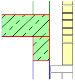

")
")
Mit dieser Funktion erstellen Sie Schraffuren und Füllungen, indem Sie abgeschlossene Flächen (Polygone) durch ein Auswahlfenster umschließen. Die Schraffurattribute können über die Optionen im Funktionsbereich gewählt werden. » Schraffuren
Mehrere in einem Schritt schraffierte und/oder gefüllte Flächen werden als eine zusammengehörige Schraffur bzw. Füllung behandelt. Sie lassen sich später gemeinsam löschen oder ändern.
Um das Schraffurbild an einem Ursprung auszurichten
Wird beim Anlegen einer Flächenschraffur kein Ursprung definiert, wird das Schraffurbild willkürlich in der Fläche verteilt. Durch Angabe eines Ursprungs kann das Schraffurbild gezielt ausgerichtet werden. Der Ursprung definiert dabei die linke untere Ecke des Schraffurbildes.
|
|
Ohne Ursprung wird die Schraffur, hier am Beispiel des Kreuzverbandes, willkürlich in der markierten Fläche verteilt. |
Wird der Ursprung verwendet, haben Sie die Möglichkeit, einen Punkt anzuklicken, bei dem die Schraffur beginnen soll. |


Ursprung festlegen
§Klicken Sie unterhalb der Abfrage auf  .
.
§Klicken Sie den gewünschten Ursprung an. [Ursprungspunkt].
Steht am gewünschten Ursprung kein Zeichenpunkt zur Verfügung, können Sie vorab einen Hilfspunkt setzen.
Das Schraffurbild wird im Folgenden mit der linken unteren Ecke am Ursprung ausgerichtet.
Schraffurbereich definieren
§Wählen Sie die Art der Auswahl aus:
Alle in dem markierten Bereich liegenden abgeschlossenen Flächen werden, jede für sich, schraffiert bzw. gefüllt.
Elemente im Rechteck. Sie können mehrere Rechtecke nacheinander aufziehen. Ziehen Sie ein Rechteck um die Fläche, die schraffiert bzw. gefüllt werden soll. Klicken Sie den Anfangspunkt des Rechteckes an [1. Punkt], lassen Sie die Maustaste los und ziehen Sie mit der Maus den Rahmen auf, bis die gewünschte Größe erreicht ist. Mit Linksklick bestätigen Sie die Auswahl. [2. Punkt]. |
|
Elemente im Polygon. Legen Sie durch Anklicken beliebig viele Punkte eines Polygons um die Fläche fest, die schraffiert bzw. gefüllt werden soll. Das Polygon muss nicht vollständig geschlossen sein. Bestätigen Sie die Auswahl mit Rechtsklick. |
|
Tipp: |
|
Schalten Sie störende Linien innerhalb des Fensters unter [Konst1 | Folien | transformieren und ausschalten] aus. |

Beispiel:
 |
 |
 |
Eingestellte Option: Schraffieren und Füllen.
|
Nur zwischen dem ersten und letzten Schnittpunkt werden die Schraffur- und Fülllinien erzeugt. |
Eingestellte Option: Nur Füllen.
|


Zugehörige Aufgaben:
·Schraffurbereich über Punkte definieren
·Schraffurbereich über Linienelemente definieren
·Schraffurbereich über Rechteck definieren
·Schraffur entlang einer Linie oder Kreisbogens zeichnen
Zugehörige Referenzen: